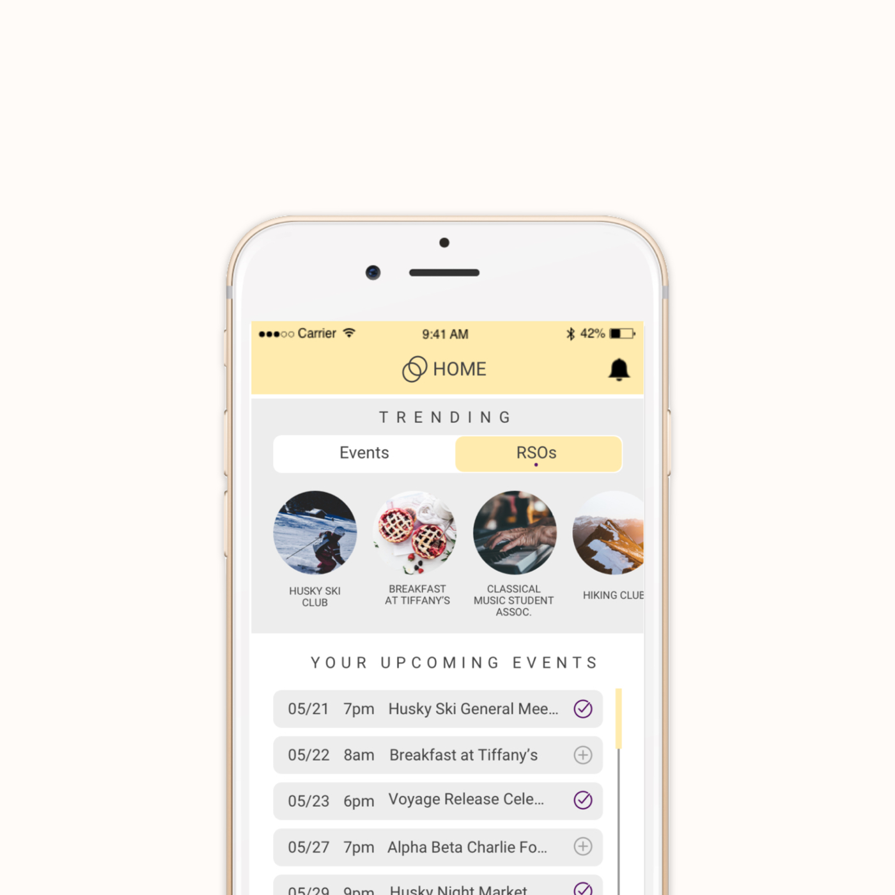
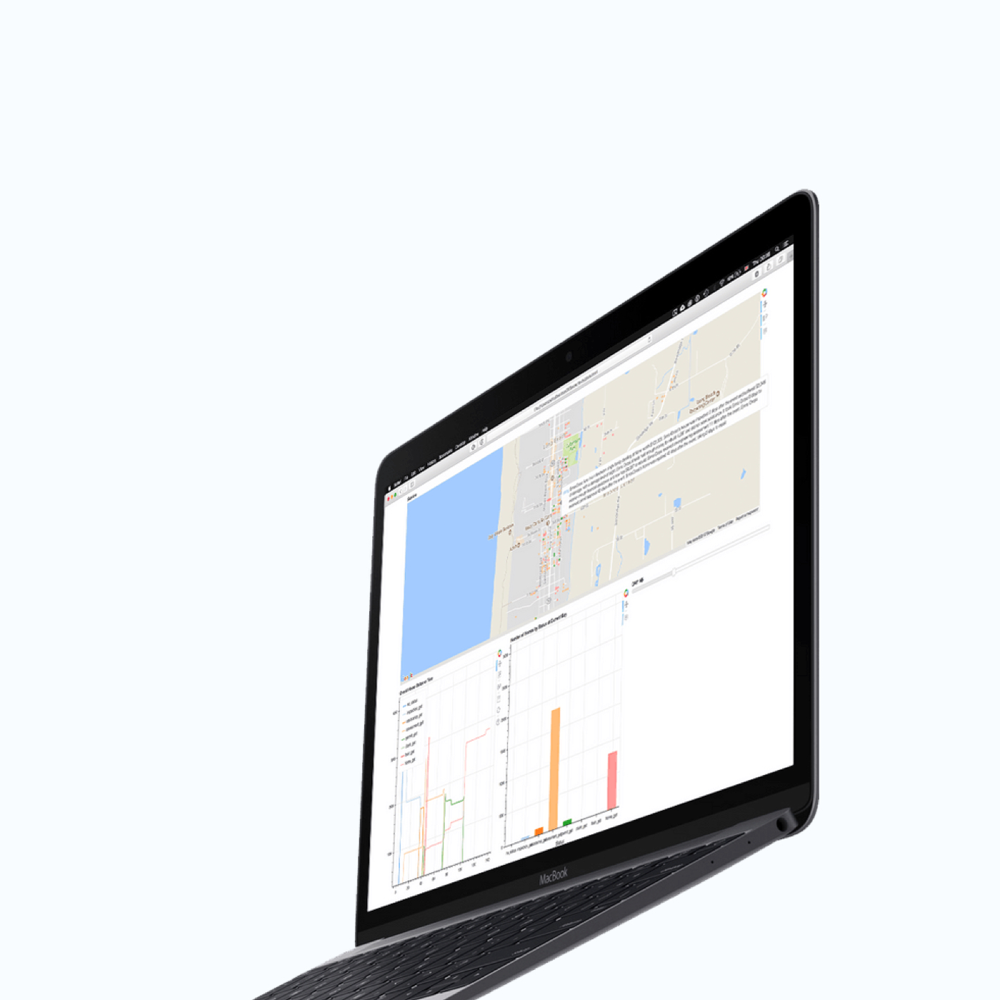

works
daily ui
about
👋 I'm Ostin and I'm a Product Designer based in Seattle.
I design experiences that delight and inspire. Currently, I'm a student/researcher at
UW HCDE
and a layout designer at
Voyage
.

Circles
Venmo Search
Case Study

DESaster Interface
made from scratch, with ❤️, in seattle. copyright ostin kurniawan 2018.
inspiration